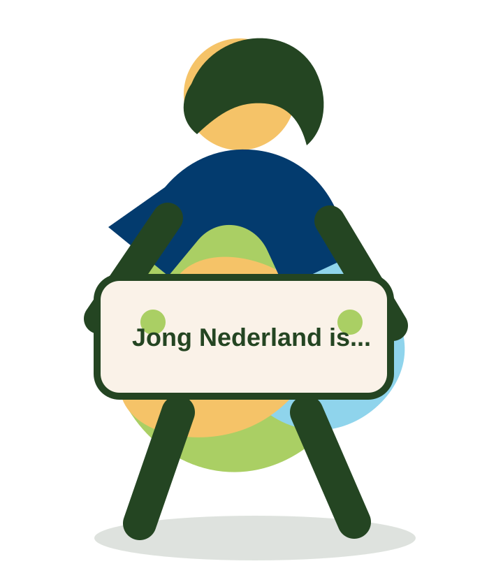

Samen spelen
Spellen, uitdagingen en activiteiten waarin iedereen mee kan doen.
Jong Nederland
Een plek waar kinderen en jongeren spelen, ontdekken, maken, lachen en groeien in zelfvertrouwen.

Wat is Jong Nederland?
Bij Jong Nederland komen kinderen, jongeren en vrijwilligers samen in hun eigen lokale club. De ene week is het creatief, de andere week actief, buiten, binnen, rustig, gek of juist spannend.
Het draait om plezier, vriendschap, ontdekken en jezelf mogen zijn.
Elke week iets nieuws
Spellen, uitdagingen en activiteiten waarin iedereen mee kan doen.
Maken, bouwen, verzinnen en proberen zonder dat alles perfect hoeft.
Een vaste groep waar kinderen zichzelf kunnen zijn en erbij horen.
Waar ben je naar op zoek?
Niet alleen kamp
Van een rommelige knutseltafel tot een spannend avondspel. Van koken in het clubgebouw tot een weekend weg. De kracht zit juist in de afwisseling.

“Bij Jong Nederland voelt het niet als een vereniging, maar als een grote vriendengroep.”
Vrijwilliger bij Jong Nederland
Doe mee
Deze demo gebruikt nog geen echte clubzoeker. In WordPress kan dit blok linken naar de bestaande afdelingenkaart of later een echte zoekmodule krijgen.
Voor lokale clubs
Help kinderen groeien in zelfvertrouwen, maak nieuwe vrienden en beleef samen kleine avonturen.
Meer weten